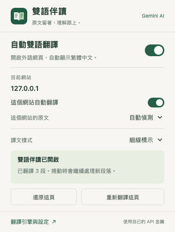

原文留著，
讓 AI 幫你讀懂。
外文網頁自動接上繁體中文。Gemini 免費額度優先，也能選擇 Chrome 本機翻譯；閱讀時不需要開側邊欄。
金鑰各自設定，不放在公開專案。
每個使用者都填自己的 API 金鑰。套件免月訂閱；Gemini 免費額度有使用限制，如果 API 專案已開通計費，仍可能依用量收費。
每個使用者都填自己的 API 金鑰。套件免月訂閱；Gemini 免費額度有使用限制，如果 API 專案已開通計費，仍可能依用量收費。
安裝：4 步
- 下載 ZIP 並解壓縮
放在固定位置，安裝後保留資料夾。
- 開啟 Chrome 擴充功能管理
在 Chrome 網址列輸入
chrome://extensions，開啟右上角「開發人員模式」。 - 載入 extension 資料夾
按「載入未封裝項目」，選擇解壓縮資料夾裡含有
manifest.json的extension那一層。 - 設定自己的 Gemini 金鑰
從工具列開啟「雙語伴讀」→「翻譯引擎與設定」。依下方步驟儲存後，重新整理外文文章即可自動翻譯。
如果已安裝舊版，更新原資料夾，在 chrome://extensions 對「雙語伴讀」按重新載入，再重新整理文章。請不要直接以 file:// 開啟 popup.html 或 setup.html。
第一次用 Gemini
- 建立 API 金鑰
前往 Google AI Studio 建立自己的金鑰。若以免費額度為優先，先確認 API 專案的計費狀態與可用配額。
- 貼到擴充功能設定
選 Gemini，將金鑰填入「API 金鑰」。可先按「測試 AI 翻譯」，確認固定例句能翻譯。
- 同意並啟用
勾選雲端翻譯說明，再按「儲存並啟用 Gemini」。新開網頁會自動翻譯；已開文章請重新整理或按「重新翻譯這頁」。
雲端引擎會把待翻譯段落傳給你選擇的服務商；Google 的免費層級可能使用提交內容改善產品。敏感內容可以改選本機引擎，或暫停該網站的自動翻譯。查看隱私說明。
工具列裡，就有日常需要的設定

自動翻譯開關、暫停目前網站、指定原文語言，以及還原／重新翻譯都在這裡。
譯文直接出現在原文段落下方，關閉面板也會繼續翻譯。
圖片來自隔離測試環境；AI 功能測試使用模擬回應，未使用私人金鑰完成線上品質評測。
不用金鑰，也可以閱讀雙語
在設定選擇 Chrome 本機翻譯，按「使用本機翻譯」，再按「準備英文翻譯」。第一次須下載模型；模型備妥後，待翻譯文字在這台電腦處理。
本版處理網頁文字，尚未支援 PDF、圖片 OCR 或影片字幕。Chrome 內部頁面與部分特殊網站無法翻譯。本機引擎實際可用性依 Chrome、裝置與語言模型而定。